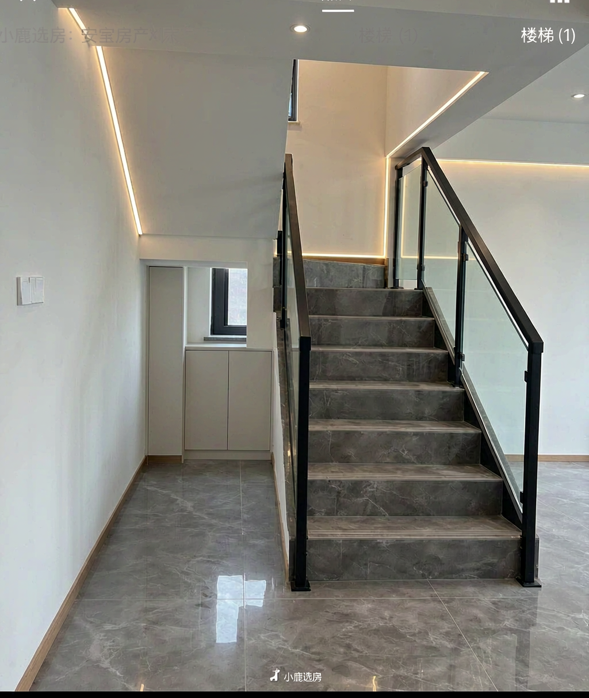
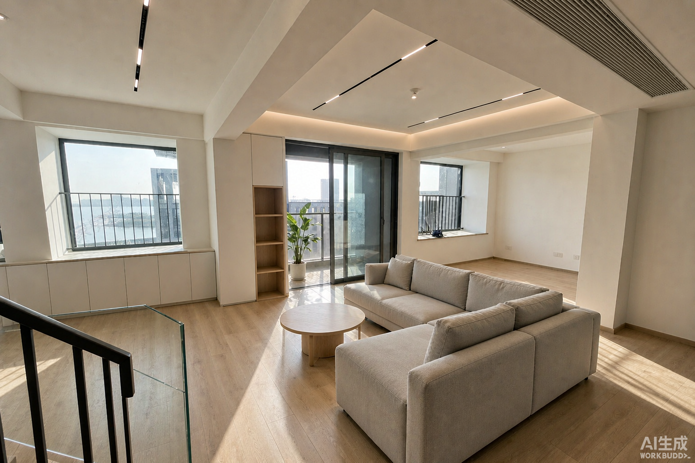
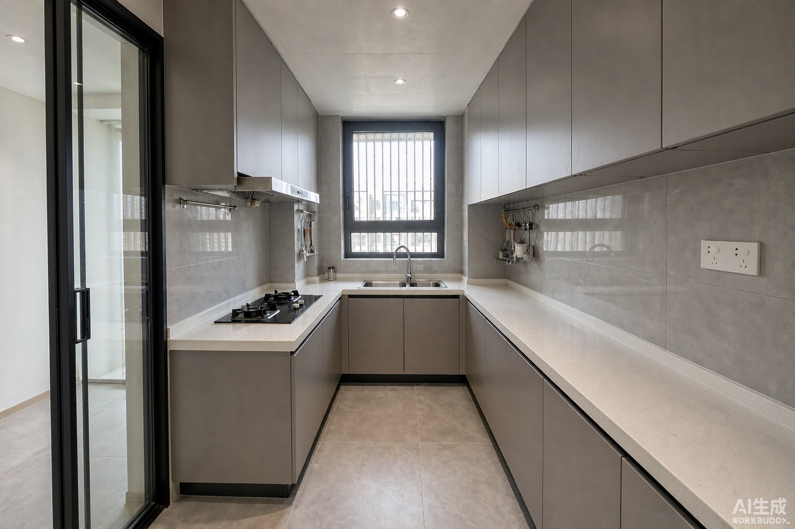
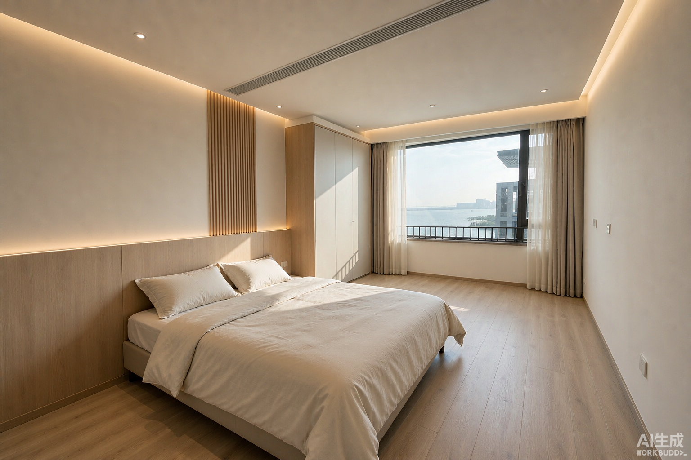
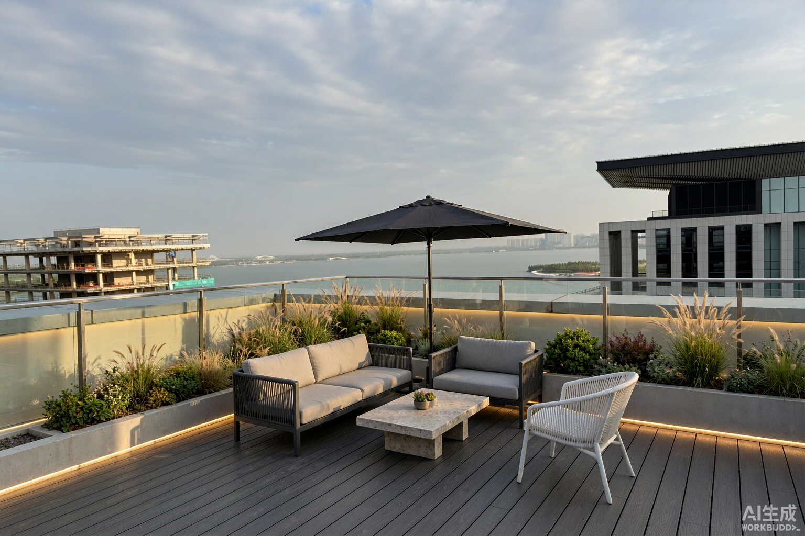

01结构红线：这些地方不能动
户型图上的黑色实心墙体是承重墙，实拍照片也印证了这一点。下面清单按「绝对不动 / 需审批 / 可以动」三级划分。任何拆墙动作，以物业备案结构图和结构工程师现场意见为准，本方案不替代那一纸意见。
| 位置 | 判断 | 结论 |
|---|
| 东侧整面长外墙（一楼约 5.8m、二楼约 4.0m 段） | 承重 | 不得开门洞、不得削薄、不得嵌装深柜破皮 |
| 厨房西墙 / 北墙、次卧东墙与北墙、卫生间周边墙体 | 承重 | 全部保留，仅可做表面装饰 |
| 楼梯梯段与梯梁（实拍确认为现浇石材踏步） | 结构 | 位置、踏步数、走向全部不动，只更换栏杆扶手 |
| 南阳台栏板与推拉门洞口 | 需审批 | 包封、扩洞、改门需物业书面同意 |
| 二楼北侧露台（标注「顶上铺空」） | 需审批 | 不得擅自封顶搭房间，违建与防水双重风险 |
| 天台护栏、屋面设备、雨水立管 | 需审批 | 护栏可加玻璃挡板，设备与立管不得移位 |
| 餐厅与厅之间的隔墙 / 门洞、厨卫内部隔墙、主卧与书房隔墙非承重段 | 非承重 | 可拆改、可移门洞，但开工前仍需现场核实 |
说直白点：AI 和设计稿都不会为你的结构安全负责。拆墙之前，让物业出结构图、让结构工程师签字，这笔钱不能省。效果图再好看，也比不上一面不能拆的墙。
02一楼方案：玄关 + 开放餐厨 + 江景客厅
一楼的问题很清楚：进门没玄关、楼梯把厅切碎、厨房封闭压抑、收纳严重不足。改造目标是把「一个厅」变成「玄关—餐厅—客厅」三个层次，同时让南向江景成为视线终点。
一楼改造后功能分区示意示意图，非精确比例，非施工图
一楼改动清单
- 新增玄关。入户门内侧做 1.2–1.4m 通顶玄关柜，换鞋、挂衣、收纳一体，顺带挡住从门外直视餐厅的视线。柜体做悬空底部放常穿鞋。
- 餐厨之间改三联玻璃移门。厨房保持 U 型不动（烟道、燃气、排水都在原位），门洞换成黑色窄边三联玻璃门。开着是开放餐厨，炒菜时关上挡油烟，采光不受影响。
- 客厅家具朝南。沙发背北朝南，面向阳台江景。电视柜放西墙（实墙段），不用大电视也可以考虑激光电视 + 抗光幕，把南面完整留给景观。
- 楼梯下方做储藏间。现浇梯段不能动，但底部净空可以封一扇门，塞行李箱、吸尘器、工具箱。比空着强。
- 一楼卫生间干湿分离。洗手台外移至过道侧，里面留马桶 + 淋浴。宽度只有 1.47m 左右，别硬塞浴缸。
- 一楼次卧做长辈房。北向安静，离卫生间近。床靠西墙，预留轮椅回转余地，门口做无门槛石。
- 阳台保持开放。南向江景阳台是这套房最贵的几平方米，别拿来晾衣服、别包封进客厅。休闲阳台，放两把椅子一株绿植就够。
- 全屋收纳量化。按 3–4 口人标准，一楼需新增收纳投影面积约 8–10 延米（玄关柜、餐边柜、电视柜、楼梯下储藏、次卧衣柜）。
楼梯专项设计
楼梯是现浇结构，梯段、梯梁、踏步数、平台位置、梯井宽度全部不动——这是红线。改造只做三件事：换栏杆、翻新踏面、榨干梯下。
- 栏杆全换。现状木立柱 + 木扶手视觉厚重、显旧，和全屋现代简约不搭。换成 50×8 黑色氟碳漆扁钢立柱（间距 ≤1000）+ 6+1.14PVB+6 超白夹胶玻璃栏板 + 黑色金属扶手 50×40。栏杆总高从踏步前缘起 ≥1050mm。玻璃通透，楼梯井不压抑，光线能穿过去。
- 踏步翻新。原深色石材踏步保留梯段，表面打磨翻新成哑光面，前缘开 2 道 3mm 深防滑槽。每级踢面上沿暗藏 24V 低压 LED 暖光灯带（3000K），夜间上楼不用开顶灯，顺便把梯段轮廓勾出来。
- 梯下做储藏间。楼梯下部净高约 1.9m，做一樘 800mm 宽哑光白平板门，内部做 4 层活动层板。放行李箱、吸尘器、工具箱、换季物品，比空着强十倍。不要塞空调外机或设备主机，散热和检修都不行。
- 二楼梯口过道。净宽约 1.29m，任一侧做 30–35cm 深薄收纳柜（家政柜或书柜），不影响通行。
楼梯改造设计图示意图，非施工图；实际踏步数与跑向以现场实测为准

楼梯 · 黑金属立柱 + 超白夹胶玻璃栏板，石材踏步翻新 + 暗藏灯带，梯下做储藏柜对应原图：一楼楼梯位置
03二楼方案：主卧套房化 + 多功能书房
二楼的问题是主卧虽大却没有独立卫浴、9.2㎡ 的「卫生房」浪费、楼梯口过道仅 1.29m 显得压抑、北侧露台闲置。改造核心是把西南区域整体做成主卧套房。
二楼改造后功能分区示意示意图，非精确比例，非施工图
二楼改动清单
- 主卧套房化。把西南 9.2㎡「卫生房」拆成两块：靠内侧做主卫（淋浴 + 台盆 + 马桶，保留原有排水点位），靠主卧侧做步入式衣帽间。主卧与衣帽间之间不装门，做成套间动线。
- 主卧床头朝西、床尾朝南。南向大窗和江景完整保留。床头背景做木饰面 + 竖向格栅 + 暗藏灯带，侧边整墙衣柜。
- 书房做多功能房。东侧 11.9㎡ 书房放 1.6m 书桌 + 整墙书柜 + 沙发床，平时办公，来客住人。东向采光适合工作，比南向稳定。
- 楼梯口过道加薄柜。过道净宽 1.29m，两侧任一侧做 30–35cm 深的薄收纳柜（家政柜或书柜），不影响通行。
- 北露台做家务绿植区。已有排水立管和地漏，正好放洗衣机 + 烘干机叠放柜、拖把池，另一侧种耐候绿植。顶上是空的，不封顶，做耐候材料。
- 二楼公卫干湿分离。3.2㎡ 服务次卧和书房，台盆外移，里面淋浴 + 马桶。
- 二楼独立入户门的处理先定性。实拍与图上显示西侧有「二楼入户」。如果是独立产权动线或消防门，保留并做门厅收纳；如果只是内部通行口，可以改成室内门通向主卧套间。这条必须先和物业确认清楚，别先砸。
04天台方案：这套房最大的价值点
天台南向正对开阔水面，对岸有城市天际线，视野没有遮挡。这是全屋最值得投入的一块。前提是防水重做、地面架空、水电到位。
分区建议
- 南向观景平台：户外沙发组 + 茶几 + 遮阳伞，护栏内侧加 60cm 透明夹胶玻璃挡风板，不挡视线。
- 北向功能区：耐候储藏柜、洗衣晾晒（如果二楼露台不够用）、工具柜。
- 绿化带：沿护栏内侧做长条花池，种观赏草、狼尾草、小灌木，耐晒耐风。
- 动线：从上人孔或楼梯间出来先到功能区，再进入观景区。
必须做对的三件事
- 防水：原防水层全部铲除重做，建议聚脲或 TPO + 混凝土保护层，闭水试验 48 小时以上。这一步做砸，楼下就是水帘洞。
- 地面架空：防腐木塑或石材架空铺贴，绝不在防水层上直接贴砖。
- 排水：保留并疏通原雨水口，面层找坡 1%–2% 向雨水口，花池设独立排水。
违规风险提醒：天台加建玻璃房、阳光房、封闭房间，绝大多数城市属于违建，会被责令拆除且影响房屋交易。要做就做可逆的软装和轻质构筑物（廊架、遮阳篷、花池），不要砌墙盖顶。
05改造效果图
以下效果图由图像模型基于你的现场实拍图生成，锁定原户型结构、门窗位置与拍摄视角，只替换装修与家具。是意向参考，不是施工依据；实际材质以样板间和材料实样为准。

客厅 · 沙发朝南看江景，楼梯改黑金属 + 玻璃栏板，橡木地板 + 无主灯对应原图：一楼厅（朝南看）

厨房 · U 型布局不动，暖灰哑光门板 + 岩板台面，黑色窄边玻璃移门对应原图：厨房朝北看

主卧 · 床尾正对南向江景窗，木格栅床头背景 + 通顶衣柜对应原图：二楼南向主卧

天台 · 木塑架空地面 + 玻璃挡风板 + 观景沙发组 + 护栏花池灯带对应原图：天台朝南看
06材料与设备建议
| 项目 | 推荐做法 | 避坑点 |
|---|
| 全屋地面 | 客餐厅 + 卧室通铺浅橡木三层实木或木纹砖；厨卫阳台用灰色防滑砖 | 江景房楼层高、风大，木地板要选稳定性好的，别用纯实木大板 |
| 门窗玻璃 | 保留原窗框，玻璃升级 Low-E 中空钢化；阳台推拉门换黑色窄边断桥铝 | 西晒和东晒时段明显，Low-E 不能省；大玻璃要钢化 + 夹胶 |
| 厨房 | 石英石或岩板台面、大单槽、侧吸油烟机、集成吊顶改石膏板平顶 | 烟道必换止逆阀；水槽下预留净水和洗碗机位 |
| 卫生间 | 墙排马桶（如原位允许）、壁挂台盆、长条地漏、风暖浴霸 | 防水刷到 1.8m，淋浴区满墙；闭水试验 48h |
| 楼梯 | 梯段不动，栏杆换黑色细金属立柱 + 夹胶玻璃栏板，扶手实木或金属 | 玻璃栏板高度不低 1.05m，立柱间距不大于 11cm |
| 空调新风 | 保留风管机，检修口位置留足；如加新风，走厨房和过道吊顶 | 风管机内机位置不能随便挪，吊顶高度先量清楚 |
| 天台 | 聚脲/TPO 防水 + 保护层 + 木塑架空地面 + 户外电源 + 水龙头 | 防水闭水试验 48h 起，地面绝不直贴砖 |
| 灯光 | 全屋无主灯：磁吸轨道 + 筒灯 + 暗藏灯带；色温 3000–3500K | 客厅别用冷白光，江景房需要暖光压住大面积玻璃的冷感 |
07预算参考（不含家电软装）
按套内约 110㎡ 复式 + 天台约 45㎡ 估算，人工材料随城市浮动很大，以下是常见一二线城市区间，仅供排期参考。最终以三家报价为准。
| 分项 | 经济实用档 | 品质全案档 | 高配轻奢档 |
|---|
| 拆改 + 水电 + 防水 | 8–11 万 | 12–16 万 | 18–24 万 |
| 泥瓦 + 瓷砖 + 地面 | 7–10 万 | 12–17 万 | 20–28 万 |
| 木作 + 全屋柜类 | 10–14 万 | 18–26 万 | 32–45 万 |
| 油漆 + 吊顶 + 门窗套 | 5–7 万 | 8–12 万 | 14–20 万 |
| 洁具 + 厨房设备 | 4–6 万 | 8–13 万 | 18–28 万 |
| 天台专项（防水/地面/花池/遮阳） | 5–8 万 | 9–14 万 | 18–28 万 |
| 楼梯栏杆 + 智能灯光 | 2–3 万 | 4–7 万 | 9–15 万 |
| 合计（硬装 + 天台） | 约 28–40 万 | 约 55–80 万 | 约 100–150 万 |
钱要花在刀刃上：优先级排序是 ① 天台防水与排水 ② 水电与防水隐蔽工程 ③ 全屋收纳柜体 ④ 门窗玻璃 ⑤ 主材颜值。别在防水和电上省钱，省下的钱会在入住第二年加倍还回去。
08施工避坑清单
开工前
- 物业备案 + 结构图核对，确认承重墙范围，签字留底。
- 二楼独立入户门的产权与消防属性先定性，再决定封堵或保留。
- 天台防水重做方案让物业看一遍，避免日后漏水责任扯皮。
- 燃气改管、烟道移位要燃气公司出方案，不能让装修队私改。
- 中央空调风管机内机位置实测，吊顶高度先放线。
施工中
- 卫生间、露台、天台防水施工后必须 48 小时闭水试验，拍照留底。
- 水电改造拍照 + 录像 + 全屋 VR，柜子装完前存档。
- 墙砖空鼓率验收，淋浴区满墙防水。
- 玻璃栏板、阳光房类的夹胶层和钢化标识要现场核对。
- 主材进场验收型号，样板与到货对色。
- 壁挂马桶、岩板台面、台上盆、吊轨推拉门这几样是常见施工陷阱：壁挂马桶要假墙且对水箱质量敏感，岩板台面拼接易崩边，台上盆不好擦，吊轨推拉门时间长易下沉。能落地台盆就落地，能地轨就地轨。
- 天台晾晒别依赖固定晾衣架，江边风大，晾衣架要加抗风拉结；烘干机优先。
- 别在承重墙或外墙开槽埋深管，钢筋保护层被切会锈胀。
- 复式楼梯下空间不要塞设备主机，散热和检修都不行。
09需要你拍板的问题
下面这几条会直接改方案，确认后我出第二版细化方案和平面布置图。
| # | 问题 | 影响 |
|---|
| 1 | 常住人口？要不要保留 3 间卧室（一楼次卧 + 二楼次卧 + 主卧），还是允许合并一间做衣帽间/健身房？ | 决定二楼次卧去留 |
| 2 | 二楼那个独立入户门是什么性质？自用、出租、还是消防门？ | 决定要不要封堵、要不要做双钥匙 |
| 3 | 预算区间大概多少？ | 决定主材档次和天台投入深度 |
| 4 | 风格倾向：现代简约 / 原木 / 奶油 / 轻奢 / 工业？ | 影响材料与效果图第二版 |
| 5 | 要不要保留浴缸？主卫做淋浴还是浴缸 + 淋浴？ | 决定主卫布局 |
| 6 | 天台主要用途：观景会客 / 花园菜园 / 晾晒家务 / 烧烤派对？ | 决定天台分区与水电点位 |
| 7 | 要不要做全屋智能、地暖、新风？ | 影响水电改造量与吊顶 |